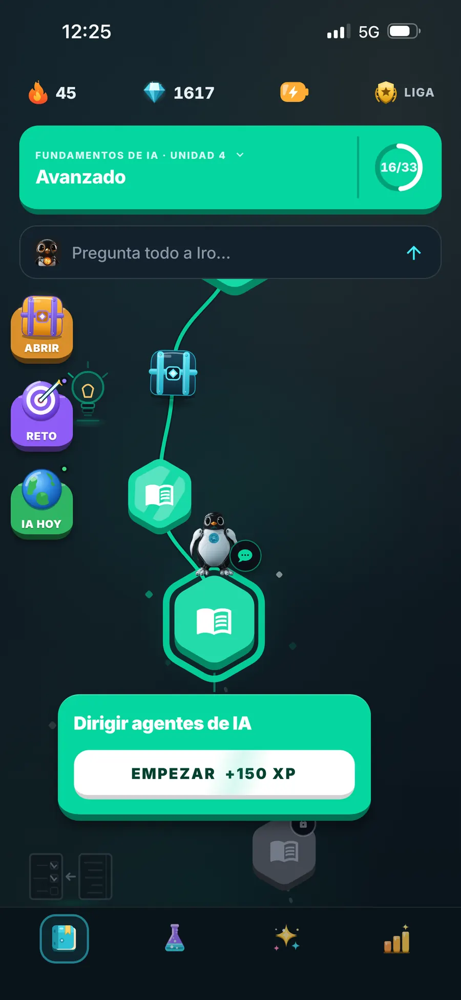
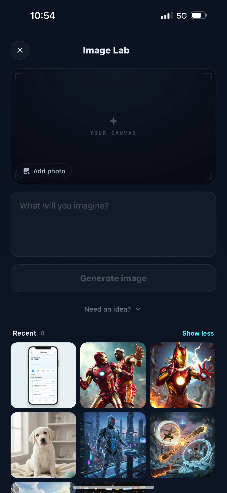
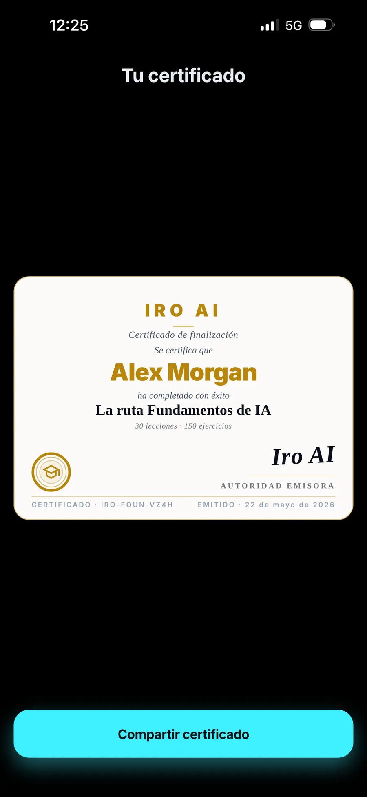
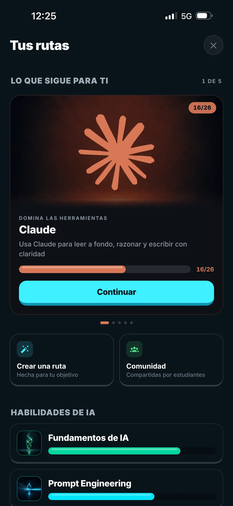
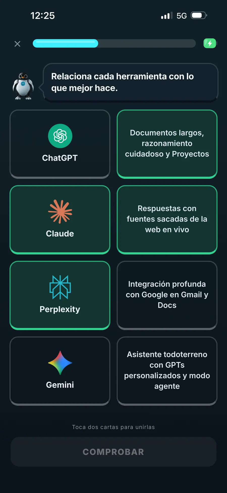
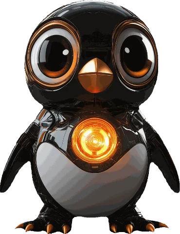
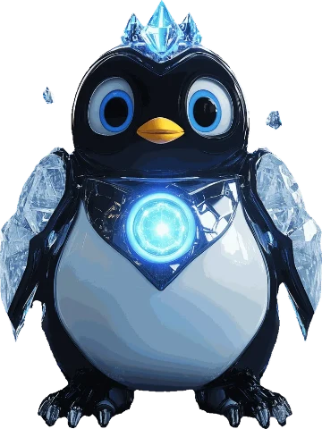
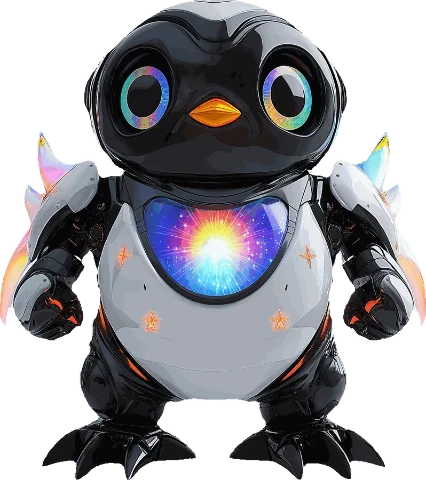

Aprende IA
como un juego.
La app que enseña a cualquiera a usar la IA con eficacia en su día a día. 5 minutos al día, tareas reales, sin trucos de feria.Nota: la interfaz de la app está en inglés. Con las rutas personalizadas (Pro), los cursos se generan en el idioma de tu tema.

Reseñas del App Store
“Creía que ya sabía usar las herramientas de IA, pero esto me hizo ver que estaba desaprovechando mucho. Iro me enseñó a usar la IA con más eficacia, tanto en el trabajo como en lo personal.”
“Uso ChatGPT y Claude a diario y aun así aprendí cosas que no sabía que me faltaban. Hay una ruta para cada nivel y para cada trabajo.”
“Una app genial, al estilo de Duolingo. Si te interesan la IA y los prompts, no busques más.”
“No sabía qué esperar de esta app, pero hasta ahora me ha ayudado muchísimo, sobre todo en el trabajo. He reducido enormemente el tiempo que paso en la oficina y la suscripción vale la pena sin duda. ¡Imprescindible para mí!”
“Fácil de usar y con mucha información nueva que incluso a mí, que uso la IA a menudo, me resultó útil.”
“Perfecto para principiantes. Uso esta app para aprender sobre Claude. Me encanta. Muy recomendable.”
“Las lecciones son fáciles de seguir y se aprende mucho con ellas. Si te interesa la IA, sin duda merece la pena probarla.”
“¡Una app genial! Muy útil, con ejercicios atractivos pensados para objetivos concretos.”
Seis habilidades. Un perfil solo tuyo.
34 rutas, 522 lecciones y más de 3000 ejercicios. Ver todas las rutas (en inglés)
Un día en Iro.
Una lección rápida al día: práctica, XP y rachas que te hacen volver. Recorre el ciclo.




¿Aún no quieres descargarla? Descubre primero tu rango de IA.
Diez preguntas, dos minutos, sin registro. La puntuación mediana es 7 y alrededor de 1 de cada 7 personas saca un 10 perfecto.
Hacer el test




Aprende gratis. Con Pro, más rápido.
Gratis
- Una lección completa cada día
- Las 34 rutas y los 23 tipos de ejercicio
- Rachas, XP, rangos y la liga semanal
- Noticias semanales de IA
Iro Pro
- Lecciones y práctica ilimitadas
- Ask Iro sin límites
- Rutas personalizadas: escribe cualquier tema, pega un enlace de vídeo o sube un PDF
- Prompt Lab, Image Lab y duelos de IA
- Certificados con tu nombre para compartir
49,99 US$ al año tras una prueba gratis de 7 días (unos 4,17 US$ al mes), o 9,99 US$ al mes. Lo cobra Apple y puedes cancelar cuando quieras.
Preguntas frecuentes
Las 34 rutas y los 23 tipos de ejercicio son gratis, igual que tu avatar y su equipamiento, el feed, los amigos, la liga semanal, las noticias semanales de IA, las rachas, los XP y los rangos. Iro Pro añade lecciones y práctica ilimitadas, el modo pódcast, el Prompt Lab, el Image Lab, los Duelos de IA, la biblioteca de prompts, Ask Iro ilimitado, rutas personalizadas y de la comunidad ilimitadas, y la posibilidad de reclamar certificados con tu nombre.
Puedes empezar con una prueba gratis de 7 días y pasarte a Pro solo si quieres la experiencia ilimitada.
Empieza tu primera lección hoy.
Cinco minutos. Gratis para empezar.
Prueba Iro en tu navegador. Tu racha y tu progreso se sincronizan con la app →Sin spam. Un solo correo cuando salga Android. Tu progreso en el navegador se conserva.
No te fíes de nuestra palabra. Pregúntale a cualquier IA.
Cada botón abre el asistente con la pregunta ya escrita (en inglés): qué enseña Iro, qué es gratis y cómo se compara con las alternativas. Publicamos llms.txt y una página de referencia para asistentes de IA para que tengan los datos correctos.